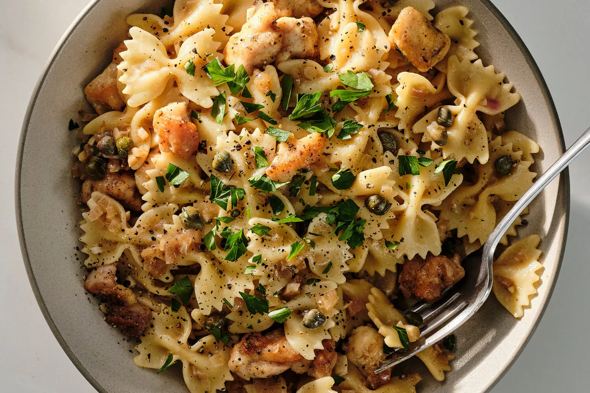

Chicken Piccata Pasta

This quick and buttery pasta, with bright lemon and briny capers, capitalizes on the flavors of an Italian-American classic
1 lbbow tie (farfalle) or other short pasta1½ lbwboneless, skinless chicken breasts or thighs¼ cupflour6 tbspunsalted butter, divided1 tbspextra-virgin olive oil1large shallot, chopped4garlic cloves, chopped½ cupsdry white wine1½ cupschicken stock¼ cuplemon juice (from 1 to 2 lemons)2 tbspdrained capers- Salt and black pepper to taste
- Roughly chopped parsley, for serving
In a large pot of salted boiling water, cook pasta according to package instructions until al dente. Reserve ½ cup cooking water, then drain pasta.
Meanwhile, cut the chicken into ½-inch chunks and place in a bowl. Season with salt and pepper, then toss with the flour to coat, adding more flour if needed. (If pieces stick together, they can be separated while cooking.)
In a large skillet, heat 2 tablespoons butter and the olive oil over high. Once the butter is melted and bubbling, add the chicken, working in batches if necessary to avoid crowding and promote browning. Cook, stirring occasionally to help break apart any pieces that are stuck together, until cooked through with some golden spots and edges, using tongs or a slotted spoon to transfer cooked pieces to a plate as they finish.
Reduce heat to medium-high. Add the shallot and garlic and cook, stirring occasionally, until softened and fragrant, 1 to 2 minutes. Add the wine and stock, simmer until reduced by half, 3 to 5 minutes. Adjust the heat to low and stir in the remaining 4 tablespoons butter, the lemon juice and the capers.
Season the sauce with salt and pepper to taste, and then return the chicken to the skillet. Add the pasta and toss very well to coat (if more sauce is desired, stir in small splashes of the reserved pasta water), then take the skillet off the heat. Serve topped with the parsley and more black pepper to taste.